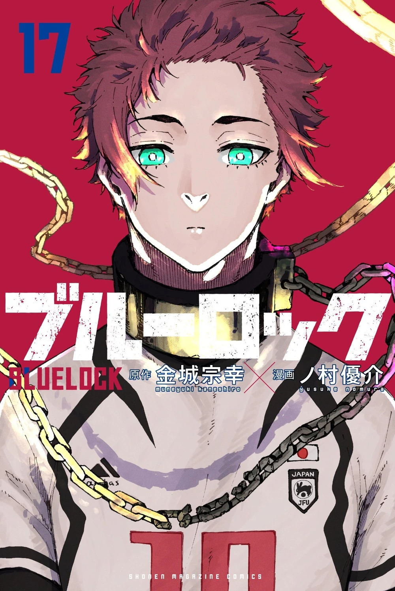
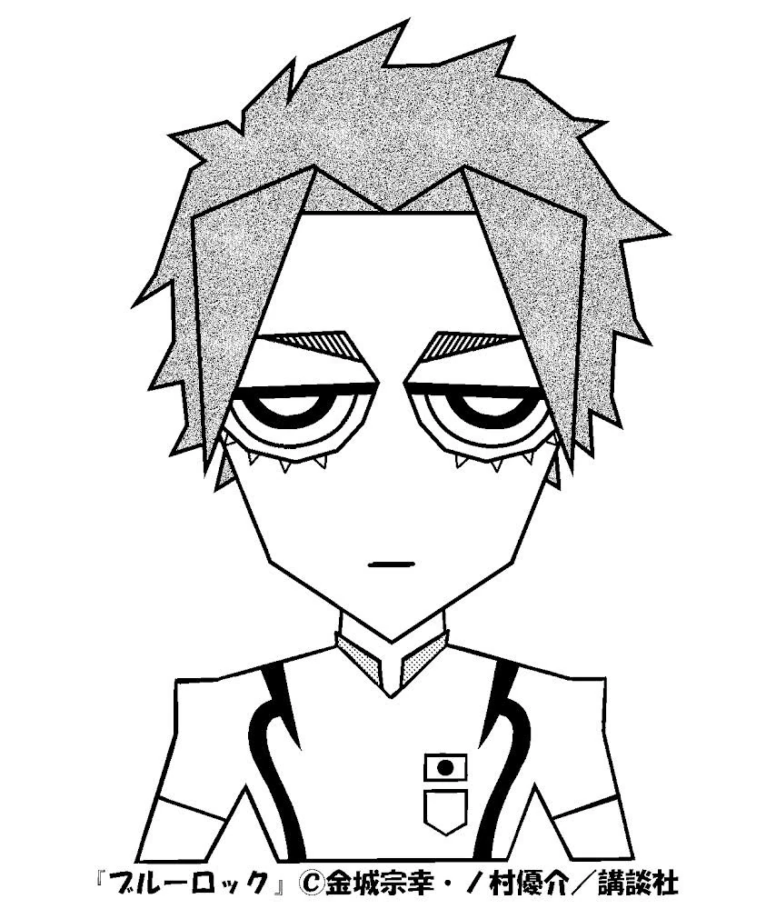
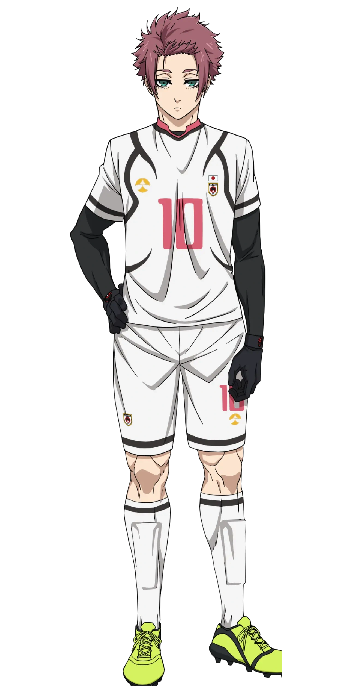

ITOSHI SAE

Japanese: 糸師 冴
Rōmaji: Itoshi Sae
Alias(es): "The Prodigy" / "Boy Genius" / Japan's Greatest Treasure"
Age: 18
Birthday: October 10
Height: 181cm / 5"11
Hair color: Magenta
Eye color: Teal
Team: Re Al (Spain)
Jersey Numbers: 10 (Japan U-20) / 20 (Re Al)
Position(s): Central Attacking Midfielder
APPEARANCE
Sae is a tall, lean young man with magenta hair and slim teal eyes that are framed by an array of long underlashes just like his brother, Rin. During the National Representative match, he wears the Japan U-20 White #10 jersey with a black shirt underneath the jersey and some black gloves.
PERSONALITY
Since a young age, Sae has been cold, blunt, and serious. He has only ever cared about becoming the best striker in the world and has only had time for things that get him closer to his goal. Sae can also be arrogant and condescending, looking down on others even if they are older than him and have more organizational authority. He is egotistical in his football play but has shown to be able to restrain himself and play his position, not trying to outshine others unnecessarily.
Sae has a lot of pride as a football player, looking down on Japanese football and all who participate in it. Sae states that he would much rather die or play in Europe with a bunch of college students than play in the J-League or play on the Japan National Team. He is very confident in his skills and wholeheartedly believes that nobody in Japan is worthy of his skills as a teammate. He dislikes the fact that he was born in Japan, saying things like he was simply born in the wrong country.
Sae seems to easily command respect in a room from most people due to his reputation and skill, even with his bad attitude and candid way of speaking, and can handle and entice rowdy and tough people into listening to him or doing things his way. Though Sae is a difficult person, he is not impossible to work with, especially if he is getting something out of it. He, out of pure interest, decides to stay in Japan on a whim after hearing about the Blue Lock Project and even joins the Japan U-20 for the match against the Blue Lock Eleven. But when his interest is satisfied, he has no problem abandoning those he deems unworthy of his time.
Even though Sae exhibits arrogance, he does not mind staying in his role as a midfielder and key passer. During the Japan National Representative match, Sae gave the Japan U-20 forwards every opportunity to score, and only after repeated failures did he decide to score himself. After the game between Japan U-20 and Blue Lock Eleven, Sae is not above admitting when he is wrong, as he tells Rin that he was wrong about Japan; they are capable of creating good strikers and that their football can still change.